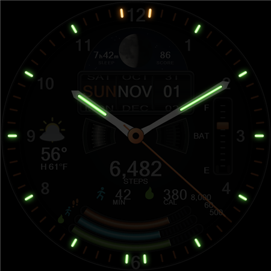
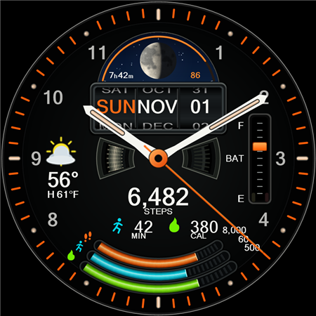
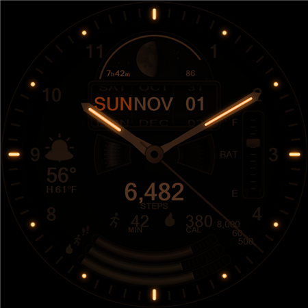
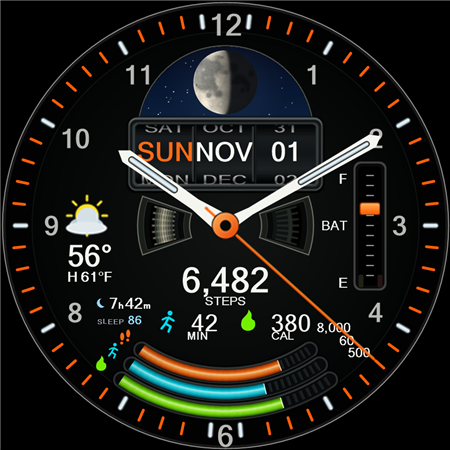

1 Field
Classic military tritium tubes.
12 and 6 numerals kept as on the current dial, each flanked by a pair of tubes (orange at 12, green at 6).



2 Ember
The face's own orange, a warm night dial.
12 and 6 numerals replaced by lume bars (bars at 12, 3, 6 and 9; round lume dots at the other hours).




3 Ice
Cold blue, moonlit.
12 and 6 numerals kept as on the current dial, each flanked by a pair of ice-blue tubes.



4 Heritage
Vintage painted lume instead of glass tubes.
All numerals kept, 12 and 6 included, repainted in lume; they are the hour markers.


5 Reactor
Multi-colour tubes on a near-black instrument dial.
12 and 6 numerals replaced by tube markers (orange double tube at 12, green tube at 6).